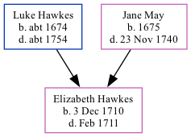

Elizabeth Hawkes 1710 - 1711
[ Home ] | [ Calendar ] | [ Surnames Index ] | [ Family History ]The daughter of Luke Hawkes and Jane May, Elizabeth Hawkes, the seven times great-aunt of Nigel Horne, was born in Fordwich, Kent, England on Dec 3, 1710.
She died in Feb 1711 in Fordwich1 and was buried there on Feb 17, 17111.
Parents
- Luke was born c. 1674
- Jane was born in 1675
Citations
- Kent, England, Tyler Index to Parish Registers, 1538-1874 Online publication - Provo, UT, USA: Ancestry.com Operations, Inc., 2010. This collection was indexed by Ancestry World Archives Project contributors.Original data - Frank Watt Tyler. The Tyler Collection. Canterbury, Kent, England: The Institute of Herald
Family Tree
Generated by Ged2Site. Last updated on Jul 20, 2025